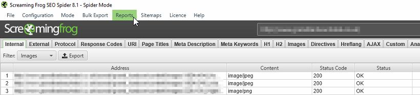

The canonical URL is the best/main/priority URL of a set. This often applies to the home page of a website which may have multiple versions, such as: “https://www.example” or “https://example”. It is important, for search engines, that you identify which of these URLs you recognise as the main page. This tells search engines which page or set of pages should be indexed.
A canonical tag is an html tag that lets search engines know the main content or origin of the content. Often this refers to content which has been syndicated across multiple sites. For example: press releases are often duplicated or partially duplicated. It is beneficial to add a canonical tag to each copy to identify the source.
There are several ways to identify canonical URLs. I recommend using all of the methods mentioned in this section (make a note of what you have done to avoid conflicting signals in the future).
One method, is to point all internal links on your website to your main URLs. If you choose to use the “www” version of your site, it is best to use the “www” page versions in all your internal links.
You can set your preferred domain in Google Search Console:
> On the Search Console Home page, click the site you want.
> Click the gear icon, and then click Site Settings.
> In the Preferred domain section, select the option you want.
You can demonstrate your chosen URL structure by setting 301/permanent redirects site-wide from your various URL versions to your chosen version. For example: all non-www URLs would be redirected to the www URLs or vice-versa.
Also, create an xml sitemap with your preferred URL structure and submit it to Google Search Console.
To identify a preferred URL or main source of content with the rel="canonical" link element. Once you have chosen the preferred URL, place the following html tag on each of your pages:
Be sure to use absolute paths rather than relative paths. For example:
> Don’t use: “/your-main-page”
> Instead use: https://yourchosendomain.com/your-main-page
Canonical errors can take many forms. All of the following examples may cause confusion when search engines index your content:
> Canonical URLs blocked by robots.txt
> Canonical URLs that have a 301/302 redirect
> Canonical URLs that deliver a 4XX or 5XX error (essentially anything other than a 200 ‘OK’ response).
> URLs discovered only via a canonical, that are not linked internally from the sites own link structure (in the ‘unlinked’ column when ‘true’).
> Relative paths used in the canonical tag, e.g. “/your-main-page”
> Placing different canonical tags in multiple versions of the same content
A great tool for finding canonical errors is Screaming frog SEO Spider. If you have a relatively small website (less than 500 urls), this tool will be able to crawl your site. Once the crawl is complete, head to: “Reports” > “Canonical errors” and save your report.
Once you have identified the errors, go through them and fix the issue. Either fix or remove the canonical tags (if they are broken or no longer apply), or manually solve each problem:
> Blocked by robots.txt — Identify if you want search engines to crawl this content. If so, unblock the URL on robots.txt
> 301/302 redirect — If you are redirecting the page, it is likely you have a new version. Either remove the old versions, change ALL of your canonical tags to match the new page or if the redirect was made in error, remove the redirect.
> Canonical URLs with 4XX or 5XX — These pages are either missing (4XX) or you have server errors (5XX). If you have removed the page it may be that the content is no longer needed. You may want to remove all duplicates. Alternatively, pick a new preferred URL and alter ALL of the canonical tags to match. If you have 5XX a response code on that URL, you have a server issue. This could just be a one off crawl error. If not, you will have to investigate further to find the source.
> URLs discovered only via canonical tag — Somehow your main page has been unlinked, decide whether this is deliberate and either choose a new main page, re-link the old page or remove all duplicate content.
> Relative paths used in the canonical tag — replace all paths in tags with absolute paths (full URL).
> Different canonical tags in multiple versions — Choose your preferred version and edit all tags to match.
If you need help solving these problems, get in touch.
Affordable Digital Marketing Pricing